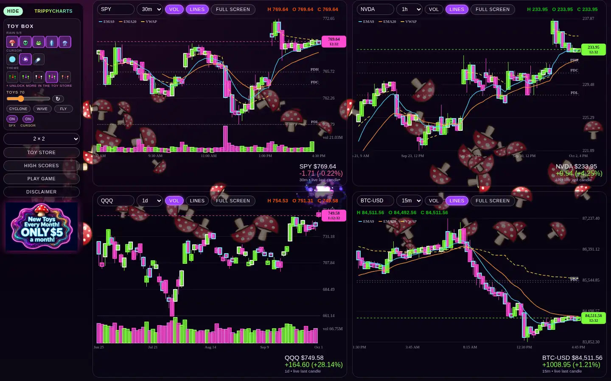
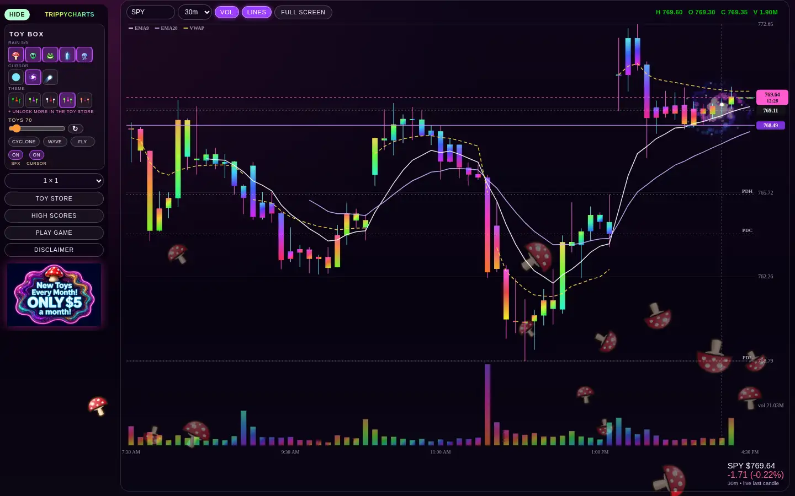
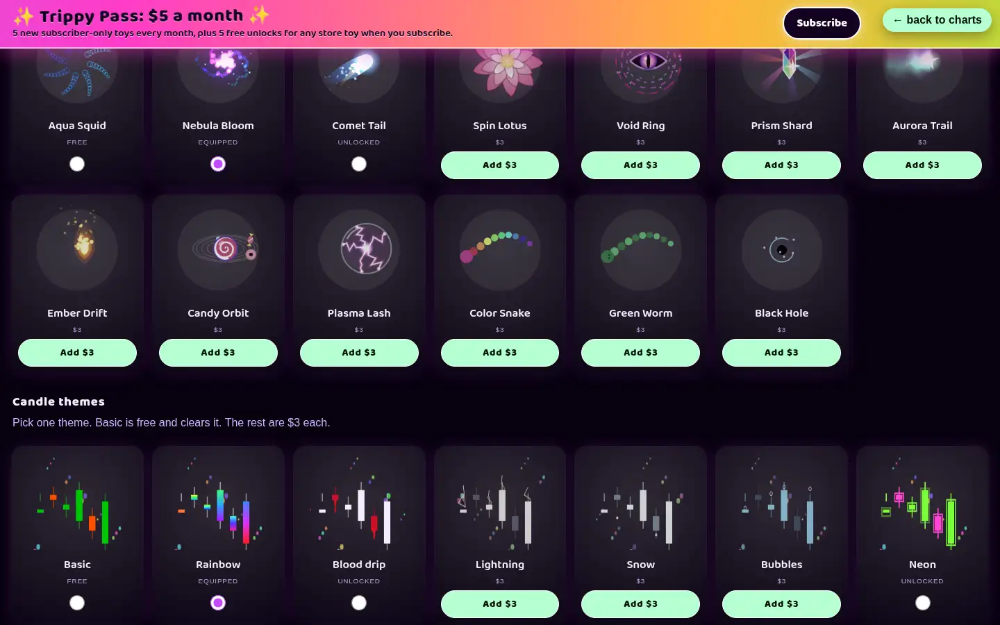
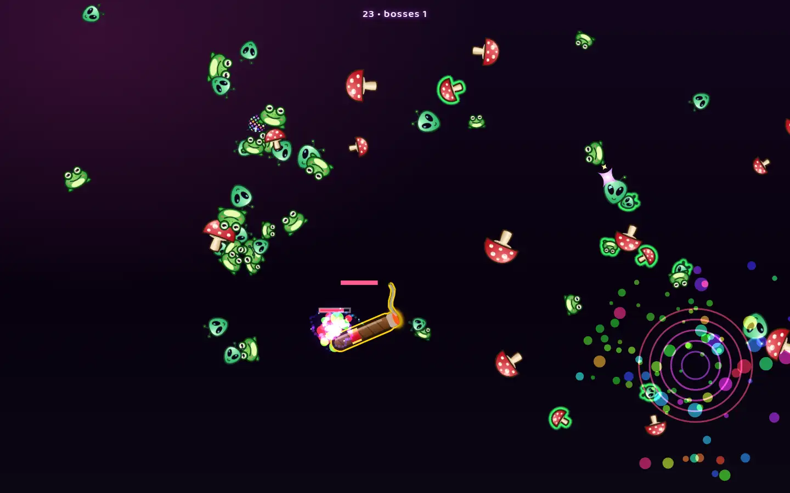
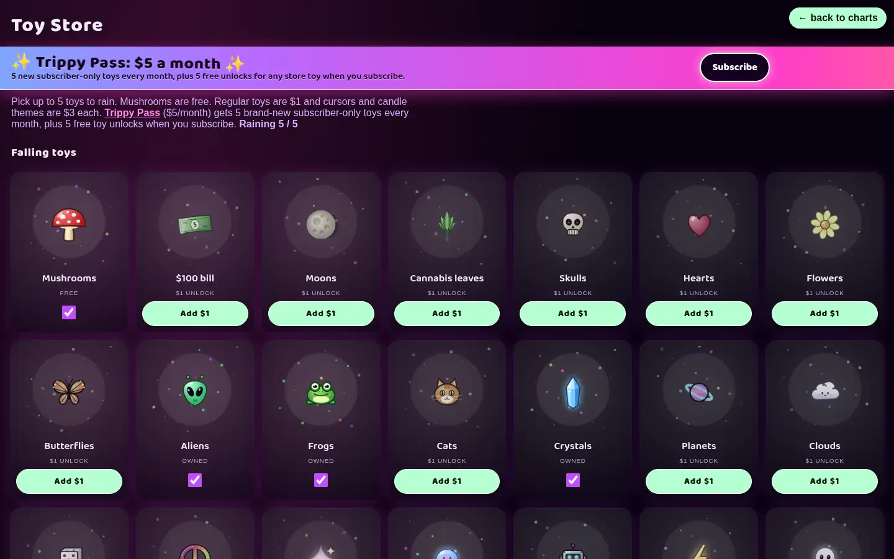

The TrippyCharts guide
Everything TrippyCharts does, all on one page: the chart tools, every candle theme, toy and cursor, the boss game, and how the Toy Store and Trippy Pass work.
1. What TrippyCharts is #
TrippyCharts shows live candlestick charts for stocks, ETFs and crypto, with psychedelic candle themes. Toys rain down the screen behind the charts, a cursor toy follows your mouse and eats them, and there's a boss game built in.

- Built for a desktop or laptop with a mouse. Phones and tablets will look wrong, won't have the cursor toy, and make the game nearly unplayable.
- Data comes from free public feeds (Yahoo Finance-style endpoints) and can be delayed, missing or wrong. The moving last candle is just an estimate, not an official price.
- It's an entertainment toy, not a broker and not financial advice. Check every number with your broker before you trade.
2. Getting started #
Pick your tickers
Each chart has a ticker box at its top left. Type a symbol (for example SPY, AAPL, BTC-USD) and press Enter, or click the box to open your ticker list. Every ticker that loads is saved to that list (newest first, shared by all four charts) so it works like a favorites list: type to filter it, use the arrow keys or click to load one, and click the small ✕ to remove one. Once it gets long it scrolls. Suggested tickers are listed under your saved ones. The first time you visit, the charts show SPY, QQQ, NVDA and IWM on the 30m timeframe. Your tickers, timeframes and VOL/LINES settings are saved in your browser.
Up to 4 charts
Use the layout picker in the left menu to show 1 × 1, 1 × 2, 1 × 3 or 2 × 2 (4 charts, the default).
Timeframes
The dropdown next to each ticker sets the candle size: 1m, 5m, 10m, 15m, 30m, 1h, 2h, 4h, 1d, 1w. Prices refresh about every 12 seconds. Under each chart you'll see the last price, the day's change, and the session (pre, AH for after hours, closed, or live last candle). Each chart also shows a countdown to when the current candle closes.
Full screen
Every chart has a full screen button. It puts your charts into browser full screen with the menu tucked away; click back or press Esc to leave. Scroll the mouse wheel over a chart to zoom in or out.
The left menu
- Toy box: quick buttons for the toys, cursors and themes you own. Click a toy to add it to or remove it from the rain (up to 5), click a cursor or theme to use it.
- Toys slider: how many toys fall, from 0 to 200.
- ↻ refresh (next to the slider): clears the screen and drops 200 of your selected toys right away. Handy after you change toys in the store, since the old ones can keep falling for a while.
- Cyclone / Wave / Fly: toy motion styles (see Toys).
- SFX and Cursor toggles: sound effects and the cursor toy on or off.
- Toy Store, High scores, Play game, Disclaimer, Wiki (this page) and the Trippy Pass button. With an active pass you'll see a pass on badge and a manage pass button instead.
- hide slides the menu away; the menu button on the first chart brings it back.
VOL
The vol pill on each chart turns on volume bars under the candles. It glows purple when it's on, and the top of the chart also shows the volume of the candle you're hovering.
Disclaimer
The disclaimer button opens the site's terms: desktop only, not financial advice, charts are imperfect, store and Trippy Pass rules, and no warranties. Using the site or buying something means you accept it.
3. Chart tools #

LINES
The lines pill (next to VOL) adds indicator lines. A small legend in the chart's top left labels each one.
| Line | Shows on | What it is |
|---|---|---|
| EMA9 / EMA20 | All timeframes | 9- and 20-period exponential moving averages of the close |
| SMA50 | 1d and 1w only | 50-period simple moving average |
| VWAP (dashed) | Intraday only (1m to 4h) | Volume-weighted average price, starting over each trading day (New York time) |
| PDH / PDL / PDC (dotted) | Intraday only | The prior day's high, low and close |
Drag to pan, LIVE ▸ to come back
Click and drag a chart to the right to scroll back in time. Once you've moved away from the newest candle, a purple LIVE ▸ button appears in the chart's top right corner. Click it to jump back to the live candle.
Level lines
To mark a price, click the price scale (the column of prices on the chart's right edge) at the height you want. A purple line with a price tag appears there.
- Level lines are saved per ticker in your browser and show on every timeframe of that ticker. Each ticker keeps up to 30.
- To remove one, right-click on (or right next to) the line on the chart.
4. Candle themes #
Themes change how the candles and volume bars look. You can use one at a time; pick it in the Toy Store or the menu's toy box. Basic is free; every other theme is $3, and you own it for good on that browser.
| Theme | Look | Price |
|---|---|---|
| Basic | Classic green up candles and orange-red down candles | free |
| Rainbow | Candles and volume bars filled with a shifting rainbow gradient | $3 |
| Blood drip | White up candles; red down candles drip blood down the chart | $3 |
| Lightning | Lightning bolts crackle off up candles | $3 |
| Snow | Icy candles; snowflakes fall from down candles | $3 |
| Bubbles | Blue candles; bubbles rise from up candles | $3 |
| Neon | Green and pink candles with flickering neon outlines | $3 |
| Toxic | Dark candles full of swirling green (up) or purple (down) goo | $3 |
| Plasma | Cyan-to-pink glowing candles with electric arcs and sparks | $3 |
| Lava lamp | Rounded peach and plum candles with floating lava blobs | $3 |
5. Toys & toy rain #
Toys fall in the background behind your charts. Choose up to 5 toys to rain in the Toy Store (tick their boxes) or with the toy box buttons in the left menu. The Toys slider sets how many are on screen (0 to 200), and ↻ drops a fresh batch of 200 right away.
Free and $1 toys
free Mushrooms are always free. These toys are $1 each:
Trippy Pass toys
pass only These are for subscribers and aren't sold one by one. The October 2026 drop: Rainbows, Disco balls, UFOs, Smileys, Melting clocks. Each month adds new ones (see Store & Trippy Pass).
Motion styles
By default toys just fall. The three buttons under the slider change how they move. You can have one on at a time; click it again to go back to falling.
- cyclone: toys spiral in toward the middle of the screen, then start again from the outside.
- wave: toys ride sideways across the screen in a rolling wave.
- fly: toys shoot across the screen from the edges in straight lines.
Eating toys
With the cursor on, move your mouse near toys and your cursor sucks them in and spits them out. Every toy it eats makes it grow; at full size it blobs out in a burst of sparkles and shrinks back down.
6. Cursors #
Cursor toys ride along with your mouse pointer. Pick one in the Toy Store (Cursors section) or the toy box. Turn them off with the Cursor toggle in the left menu (they're always on during the game). Cursors are drawn at 2× size, and the area that pulls toys in is scaled up 2× to match.

| Cursor | Look | Price |
|---|---|---|
| Aqua Squid | The original glowing squid with swirling tentacles | free |
| Nebula Bloom | A spinning spiral galaxy | $3 |
| Comet Tail | An icy comet with a streaming tail | $3 |
| Spin Lotus | A layered, breathing lotus flower | $3 |
| Void Ring | An eldritch void eye | $3 |
| Prism Shard | A spinning gem throwing rainbow beams | $3 |
| Aurora Trail | Rippling aurora ribbons | $3 |
| Ember Drift | A fireball shedding embers | $3 |
| Candy Orbit | A candy-colored solar system | $3 |
| Plasma Lash | A plasma globe crackling with lightning | $3 |
| Color Snake | A long rainbow snake that trails behind the pointer | $3 |
| Green Worm | A long green worm that trails behind the pointer | $3 |
| Black Hole | A swirling black hole pulling in specks of light | $3 |
7. The game #

Starting
Click play game in the left menu. The page goes full screen, the charts and menu hide, music starts, and a boss floats around the screen. The boss is a giant toy, picked from toys you don't have in your rain. Press Esc (leaving full screen) to quit any time.
Controls
- Move the mouse into the toys to suck them up.
- Every toy you swallow gets spat at the nearest boss automatically, as a green-outlined shot that homes in on it.
- Each hit is 1 point and takes a quarter of the boss's health, so 4 hits kill a boss.
- Don't touch the bosses. Each touch costs 20% of your health bar.
Boss pace
You start with 1 boss. You face one more boss for every 3 kills (2 after 3 kills, 3 after 6, and so on), up to 6 at once. The top of the screen shows your score and how many bosses you're facing. When toys run low, a new wave comes in falling, spiraling, waving or flying.
Health and the end
You have one life bar and no healing. When it's empty the game ends, full screen closes, and you're asked to put a name (up to 16 characters) on the board, or skip.
High scores
high scores opens the shared board: one leaderboard for everyone, showing the top 25 scores. If the board server can't be reached, it shows the scores saved on your own browser instead. No prizes, just bragging rights.
8. Store & Trippy Pass #

Prices
| Item | Price |
|---|---|
| Mushrooms, Aqua Squid cursor, Basic theme | free forever |
| Regular falling toys | $1 each |
| Cursors | $3 each |
| Candle themes | $3 each |
| Trippy Pass | $5 / month |
Click Add $1 or Add $3 to put items in the cart (bottom right), then Checkout. You'll pay on Stripe's checkout page. When you come back, the store checks with our server and equips what you bought. It can take a minute to show up; if it doesn't, refresh the store page. Purchases are cosmetic only (no market data) and one-off unlocks aren't refundable.
Trippy Pass ($5/month)
- 5 new subscriber-only toys every month. New pass toys are designed around the 25th and unlock on the 1st of the next month.
- While your pass is active you can use every pass toy released so far. Pass toys are never sold separately.
- When you subscribe you get 5 free unlocks. Each one permanently unlocks one regular $1 store toy (use the yellow Use free unlock button on a toy card). Toys you unlock this way are yours even after you cancel. Free unlocks don't work on pass toys, cursors or themes.
- It renews every month until you cancel. If you cancel, you keep the pass until the end of the month you've paid for, then pass toys lock again. No refunds for partial months.
No signup: purchases belong to this browser
There are no accounts or logins. The first time you visit, your browser gets a random player ID, and our server keeps track of what that ID owns. Stripe tells the server when a payment goes through, and every page load asks the server what you own. That means:
- Your toys, cursors, themes, pass and unlocks belong to this browser on this computer.
- Clearing your browser data, using a private window, or switching browsers or computers gives you a new ID, which won't see your purchases. There's no "restore purchases" button, so keep using the same browser.
Managing or cancelling the pass
With an active pass, the left menu shows manage pass (the store's banner button also says Manage pass). It opens the Stripe billing portal for the subscription linked to this browser, where you can cancel or update your payment method. Afterwards you come back to trippycharts.com. If no pass is linked to the browser you're on, you'll see “No Trippy Pass found for this browser.”
9. FAQ & troubleshooting #
It's laggy or choppy. What can I do?
TrippyCharts animates a lot at once. Try these:
- Close other browser tabs and heavy apps.
- Make sure hardware acceleration is on in your browser (Chrome: Settings → System → “Use graphics acceleration when available”), then restart the browser.
- Lower the Toys slider, or turn off Cyclone/Wave/Fly.
- Show fewer charts (1 × 1 or 1 × 2). Particle themes like Snow, Bubbles, Lightning and Plasma take more work than Basic.
Does it work on my phone or tablet?
Not really. Phones and tablets aren't supported. The page will load in a stacked layout, but it looks wrong, there's no cursor toy, and the game is nearly unplayable. Use a desktop or laptop with a mouse.
Why doesn't the price match my broker?
Data comes from free third-party feeds and can be delayed, missing, or put on the wrong candle. After-hours prices may not match a candle, and the moving last candle is just a visual estimate. If a chart says no live feed, the feed didn't answer; it tries again about every 12 seconds. Never trade off these charts; check every number with your broker.
I bought something but it's not showing.
Wait a minute and refresh the Toy Store page. Make sure you're in the same browser you paid in, and not in a private window.
I changed toys but the old ones are still falling.
Click ↻ next to the Toys slider to clear the screen and drop your current toys.
How do I get rid of a level line?
Right-click on the purple line on the chart.